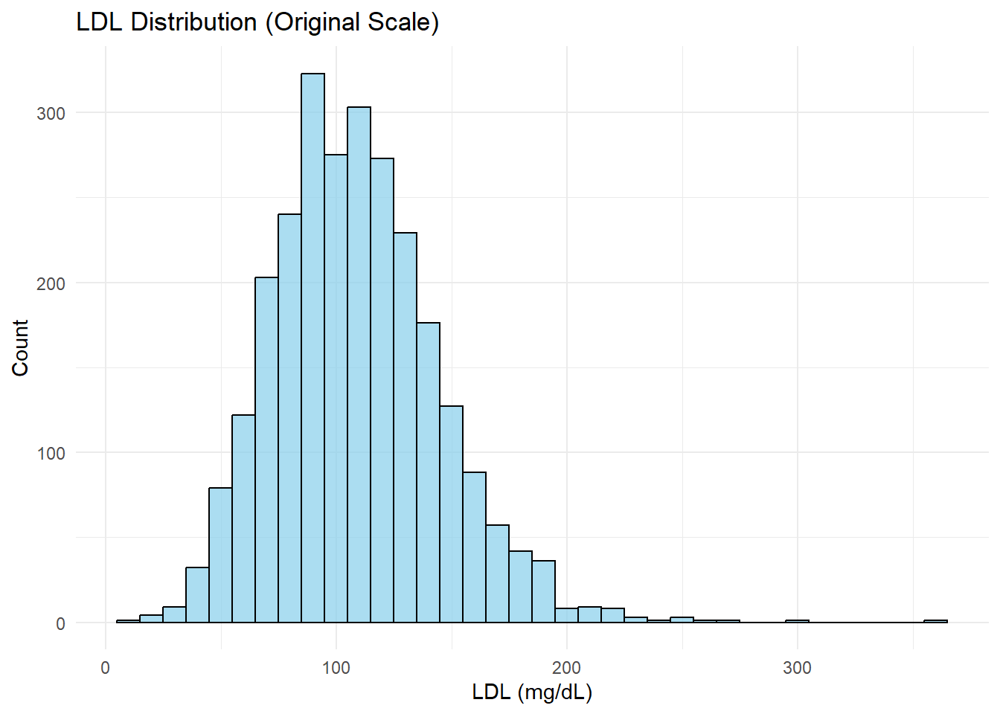
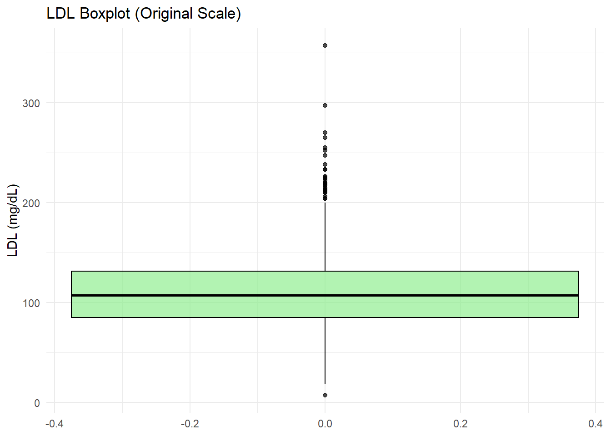
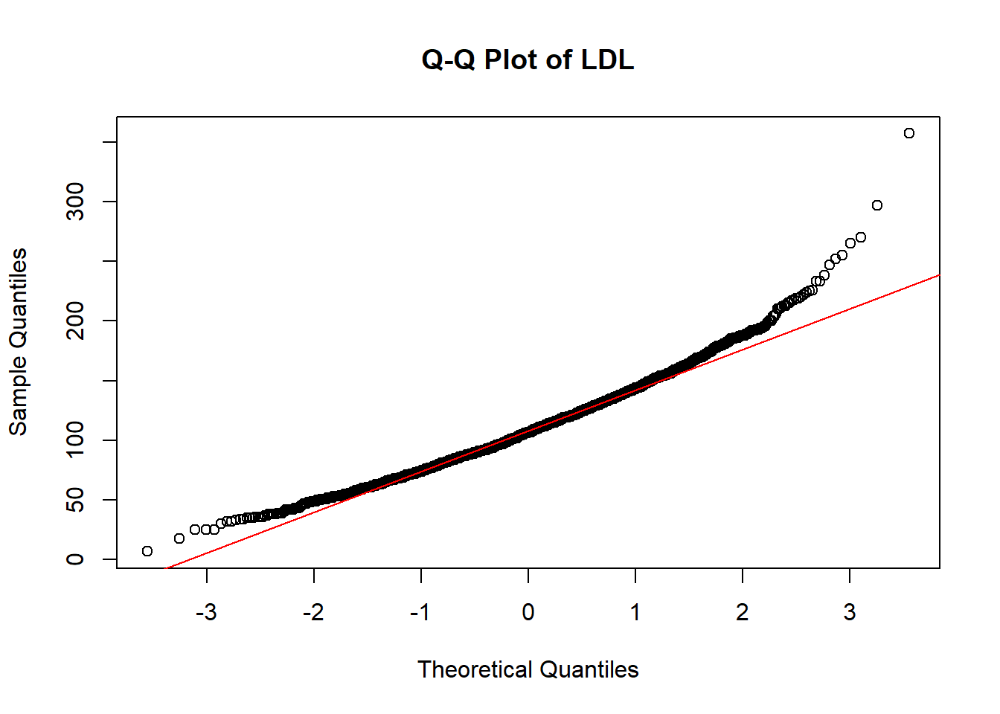
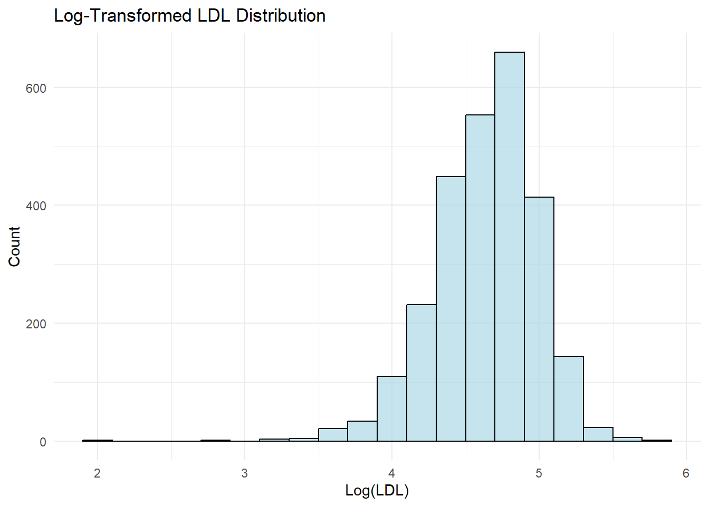
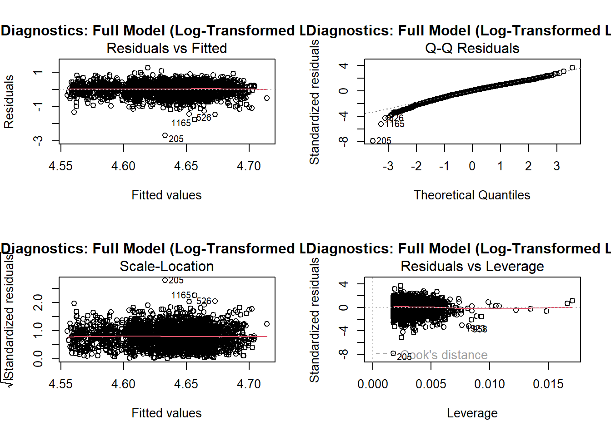
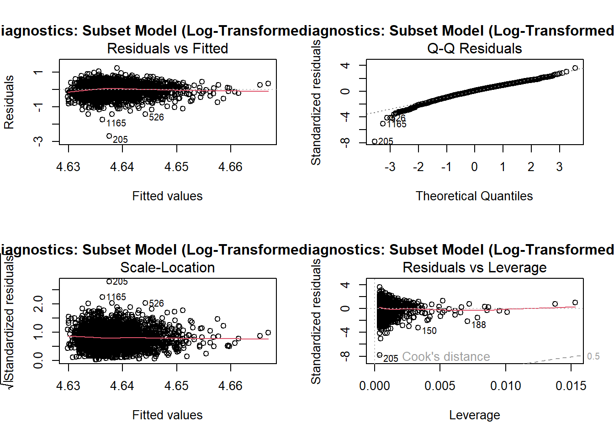

# Load necessary libraries
library(tidyverse)
library(broom)
# Ensure clean data is loaded
clean_data <- readRDS("data/clean_data.Rds")Overview
This page presents the analyses for Study 2, focusing on statistical tests and visualizations based on the NHANES dataset.
Research Aim for Study 2: To investigate whether BMI (key predictor) predicts LDL (quantitative outcome) while (possibly) adjusting for gender, marital status, and race/ethnicity as covariates
A. Data Cleaning and Preparation
We followed the same steps in Study 1 to arrive at “clean_data” first
Then, we will filter to include only complete cases in our predictor (BMI) and outcome (LDL), this will create “complete_data”
# Load necessary libraries
library(tidyverse)
# Create a new dataset with complete cases for BMI and LDL
complete_data <- clean_data %>%
filter(!is.na(BMI) & !is.na(LDL))
# Save the new dataset as RDS
if (!dir.exists("data")) {
dir.create("data")
}
saveRDS(complete_data, "data/complete_data.Rds")
# View summary of the new dataset
summary(complete_data) SEQN gender race_ethnicity
Length:3541 Male :1698 Mexican American : 466
Class :character Female:1843 Other Hispanic : 377
Mode :character Non-Hispanic White:1119
Non-Hispanic Black: 920
Other Race : 659
marital_status LDL BMI
Married_Living with Partner:2130 Min. : 7.0 Min. :15.40
Widowed_Divorced_Separated : 730 1st Qu.: 85.0 1st Qu.:24.90
Never_married : 681 Median :107.0 Median :28.70
Mean :109.7 Mean :30.11
3rd Qu.:131.0 3rd Qu.:33.90
Max. :357.0 Max. :92.30
obesity
Non-obese:2019
Obese :1522
#CODEBOOK:
Same as codebook for Study 1
B. Analysis
library(tidyverse)
set.seed(1992)
training_sample <- complete_data |> slice_sample(prop = 0.75)
test_sample <-
anti_join(complete_data, training_sample, by = "SEQN")We will visualize our outcome as follows:
# Load necessary libraries
library(tidyverse)
library(patchwork)
# Ensure Dataset Exists
if (!exists("training_sample")) {
training_sample <- readRDS("data/training_sample.Rds")
}
# 1. Histogram of LDL
histogram_LDL <- ggplot(training_sample, aes(x = LDL)) +
geom_histogram(binwidth = 10, fill = "skyblue", color = "black", alpha = 0.7) +
labs(
title = "LDL Distribution (Original Scale)",
x = "LDL (mg/dL)",
y = "Count"
) +
theme_minimal()
# Print Histogram
print(histogram_LDL)
# 2. Boxplot of LDL
boxplot_LDL <- ggplot(training_sample, aes(y = LDL)) +
geom_boxplot(fill = "lightgreen", color = "black", alpha = 0.7) +
labs(
title = "LDL Boxplot (Original Scale)",
y = "LDL (mg/dL)"
) +
theme_minimal()
# Print Boxplot
print(boxplot_LDL)
# 3. Q-Q Plot for Normality
qqnorm(training_sample$LDL, main = "Q-Q Plot of LDL")
qqline(training_sample$LDL, col = "red")
The histogram and Q-Q plot suggest non-normality in the LDL distribution. To address this, we will apply a log-transformation and visualize the data as follows:
# Add a log-transformed LDL column to the training sample
training_sample <- training_sample %>%
mutate(log_LDL = log(LDL))
# Histogram of Log-Transformed LDL
ggplot(training_sample, aes(x = log_LDL)) +
geom_histogram(binwidth = 0.2, fill = "lightblue", color = "black", alpha = 0.7) +
labs(
title = "Log-Transformed LDL Distribution",
x = "Log(LDL)",
y = "Count"
) +
theme_minimal()
As we can see, this improved symmetry and reduced the influence of outliers, wo we will proceed with the log transformed LDL.
C. Model Fitting
We will fit two models: A full model with all predictors (BMI, gender, marital_status, race_ethnicity), we will name it m1. A subset model with only the key predictor (BMI), we will name it m2.
- Full Model (m1)
# Full Model: Log-Transformed LDL with All Predictors
m1 <- lm(log_LDL ~ BMI + gender + marital_status + race_ethnicity, data = training_sample)
# Summary of the Full Model
summary(m1)
Call:
lm(formula = log_LDL ~ BMI + gender + marital_status + race_ethnicity,
data = training_sample)
Residuals:
Min 1Q Median 3Q Max
-2.68713 -0.19569 0.03022 0.23409 1.25856
Coefficients:
Estimate Std. Error t value Pr(>|t|)
(Intercept) 4.6334457 0.0336438 137.720 <2e-16
BMI 0.0008868 0.0009112 0.973 0.3306
genderFemale 0.0070611 0.0135291 0.522 0.6018
marital_statusWidowed_Divorced_Separated 0.0228639 0.0174785 1.308 0.1909
marital_statusNever_married -0.0437133 0.0179487 -2.435 0.0149
race_ethnicityOther Hispanic 0.0029447 0.0274109 0.107 0.9145
race_ethnicityNon-Hispanic White -0.0254990 0.0219254 -1.163 0.2449
race_ethnicityNon-Hispanic Black -0.0485559 0.0228034 -2.129 0.0333
race_ethnicityOther Race -0.0071108 0.0239790 -0.297 0.7668
(Intercept) ***
BMI
genderFemale
marital_statusWidowed_Divorced_Separated
marital_statusNever_married *
race_ethnicityOther Hispanic
race_ethnicityNon-Hispanic White
race_ethnicityNon-Hispanic Black *
race_ethnicityOther Race
---
Signif. codes: 0 '***' 0.001 '**' 0.01 '*' 0.05 '.' 0.1 ' ' 1
Residual standard error: 0.3437 on 2646 degrees of freedom
Multiple R-squared: 0.007685, Adjusted R-squared: 0.004685
F-statistic: 2.561 on 8 and 2646 DF, p-value: 0.008807- Subset model (m2):
# Subset Model: Log-Transformed LDL with Only BMI
m2 <- lm(log_LDL ~ BMI, data = training_sample)
# Summary of the Subset Model
summary(m2)
Call:
lm(formula = log_LDL ~ BMI, data = training_sample)
Residuals:
Min 1Q Median 3Q Max
-2.69165 -0.19811 0.03102 0.23488 1.23874
Coefficients:
Estimate Std. Error t value Pr(>|t|)
(Intercept) 4.6206191 0.0275319 167.828 <2e-16 ***
BMI 0.0005986 0.0008901 0.673 0.501
---
Signif. codes: 0 '***' 0.001 '**' 0.01 '*' 0.05 '.' 0.1 ' ' 1
Residual standard error: 0.3445 on 2653 degrees of freedom
Multiple R-squared: 0.0001705, Adjusted R-squared: -0.0002064
F-statistic: 0.4523 on 1 and 2653 DF, p-value: 0.5013D. Model Assessment and Comparison
Diagnostic plot for m1:
# Diagnostic Plots for Full Model
par(mfrow = c(2, 2))
plot(m1, main = "Diagnostics: Full Model (Log-Transformed LDL)")
Diagnostic plot for m2:
# Diagnostic Plots for Subset Model
par(mfrow = c(2, 2))
plot(m2, main = "Diagnostics: Subset Model (Log-Transformed LDL)")
- In-sample assessment of m1 and m2:
# Load library for performance comparison
library(performance)
# Compare In-Sample Performance
compare_performance(m1, m2)# Comparison of Model Performance Indices
Name | Model | AIC (weights) | AICc (weights) | BIC (weights) | R2
---------------------------------------------------------------------------
m1 | lm | 1874.6 (0.953) | 1874.6 (0.952) | 1933.4 (<.001) | 0.008
m2 | lm | 1880.6 (0.047) | 1880.6 (0.048) | 1898.2 (>.999) | 1.705e-04
Name | R2 (adj.) | RMSE | Sigma
---------------------------------
m1 | 0.005 | 0.343 | 0.344
m2 | -2.064e-04 | 0.344 | 0.345Interpretation:
The in-sample comparison shows that m1 (full model) has a slightly better fit compared to m2 (subset model with only BMI) based on lower AIC (1874.6 vs. 1880.6) and slightly lower RMSE (0.343 vs. 0.344). However, the R² values for both models are extremely low (0.008 for m1 and near zero for m2), indicating that neither model explains much variance in log-transformed LDL. The adjusted R² values further confirm this lack of predictive power for both models.
- Holdout assessment of m1 and m2:
# Generate Predictions on Test Sample
pred_m1 <- predict(m1, newdata = test_sample)
pred_m2 <- predict(m2, newdata = test_sample)
# Back-transform Predictions (Exponentiate to Original LDL Scale)
pred_m1_backtransformed <- exp(pred_m1)
pred_m2_backtransformed <- exp(pred_m2)
# Calculate RMSE and R-Squared for Each Model
library(Metrics)
Attaching package: 'Metrics'The following objects are masked from 'package:performance':
mae, mse, rmse# RMSE
rmse_m1 <- rmse(test_sample$LDL, pred_m1_backtransformed)
rmse_m2 <- rmse(test_sample$LDL, pred_m2_backtransformed)
# R-Squared
rsq_m1 <- cor(test_sample$LDL, pred_m1_backtransformed)^2
rsq_m2 <- cor(test_sample$LDL, pred_m2_backtransformed)^2
# Display Results
data.frame(
Model = c("Full Model (m1)", "Subset Model (m2)"),
RMSE = c(rmse_m1, rmse_m2),
R_Squared = c(rsq_m1, rsq_m2)
) Model RMSE R_Squared
1 Full Model (m1) 36.29244 1.414005e-03
2 Subset Model (m2) 36.27355 3.881285e-05Interpretation:
In the test sample, both m1 (full model) and m2 (subset model with BMI only) perform similarly, with nearly identical RMSE values (36.29 for m1 vs. 36.27 for m2), indicating comparable predictive accuracy. However, the R² values for both models are extremely low (0.0014 for m1 and 0.00004 for m2), suggesting that neither model effectively predicts LDL in the holdout sample. This highlights that both models explain virtually no variance in LDL, even after accounting for the predictors.
E. Model Selection
Given the results above:
- Both models (m1 and m2) show similarly poor predictive performance in both the in-sample and holdout sample evaluations.
- We will choolse the simpler model (m2), which includes only BMI because it performs almost identically to m1 but avoids the complexity of including additional predictors that do not improve prediction.
F. Answering the Research Question
Using m2 (BMI-only model), the results suggest that BMI is not a strong predictor of LDL levels. The near-zero R² value indicates that BMI alone explains an extremely small proportion of the variability in LDL. This implies that other unmeasured factors may play a larger role in determining LDL levels.
G. Study Limitations
- Low Variance Explained: Both models (m1 and m2) explain almost no variability in LDL levels (R² ≈ 0).
- Missing Predictors: Important factors like diet, physical activity, and medication use were not included, potentially driving LDL variability.
- Measurement Errors: BMI or LDL measurements may contain inaccuracies affecting the model’s fit.
- Population Homogeneity: The dataset may lack diversity, limiting the model’s ability to generalize.
H. Next Steps
- Expand Predictors: Incorporate variables like diet, physical activity, and family history.
- Explore Nonlinear Models: Investigate interactions and non-linear effects to better capture relationships.
- Validation: Test the model on an independent dataset for better generalizability.